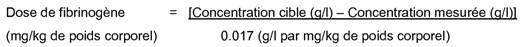

RÉSUMÉ DES CARACTÉRISTIQUES DU PRODUIT
ANSM - Mis à jour le : 17/06/2011
RIASTAP 1 g, poudre pour solution injectable/perfusion
2. COMPOSITION QUALITATIVE ET QUANTITATIVE
RIASTAP se présente sous la forme d'une poudre pour solution injectable ou pour perfusion contenant 1 g de fibrinogène humain par flacon.
Le produit reconstitué avec 50 ml d'eau pour préparations injectables contient approximativement 20 mg/ml de fibrinogène humain.
Le contenu de fibrinogène est déterminé conformément à la monographie de la Pharmacopée Européenne pour fibrinogène humain.
Excipients à effet notoire:
Sodium jusqu'à 164 mg (7,1 mmol) par flacon.
Pour la liste complète des excipients, voir rubrique 6.1.
Poudre pour solution injectable/perfusion.
Poudre blanche.
4.1. Indications thérapeutiques
Traitement des hémorragies chez les patients présentant une hypo- ou une afibrinogénémie congénitale avec une tendance aux saignements.
4.2. Posologie et mode d'administration
Le traitement doit être initié sous la surveillance d'un médecin expérimenté dans le traitement des troubles de coagulation.
Posologie
La posologie et la durée du traitement de substitution dépendent de la sévérité des troubles, de l'importance et du lieu de l'hémorragie, et de l'état clinique du patient.
La concentration en fibrinogène (fonctionnel) doit être déterminée afin de calculer la posologie individuelle. La posologie et la fréquence de l'administration doivent être adaptées de façon individuelle grâce à des dosages plasmatiques réguliers en fibrinogène et au contrôle continu de l'état clinique du patient et des autres traitements de substitution utilisés.
Les concentrations plasmatiques normales en fibrinogène sont comprises entre 1,5 à 4,5 g/l. Le seuil critique de fibrinogène plasmatique au-dessous duquel les hémorragies peuvent survenir est approximativement de 0,5 à 1,0 g/l. En cas d'intervention chirurgicale majeure, la surveillance étroite du traitement de substitution par des tests de coagulation est essentielle.
Dose initiale:
Si la concentration en fibrinogène du patient n'est pas connue, la dose recommandée est de 70 mg par kilogramme de poids corporel administrée par voie intraveineuse.
Dose suivante:
La concentration cible (1 g/l) pour des événements mineurs (par exemple épistaxis, saignement intramusculaire ou ménorragie) doit être maintenue pendant au moins trois jours. La concentration cible (1,5 g/l) pour des événements majeurs (par exemple traumatisme crânien ou hémorragie intracrânienne) doit être maintenue pendant sept jours.

Posologie pour les nouveau-nés, les enfants en bas âge et les enfants:
Les données disponibles obtenues lors des études cliniques concernant les posologies de Riastap chez l'enfant sont limitées. Compte tenu de ces études et de la longue expérience clinique avec les spécialités contenant du fibrinogène, la posologie recommandée dans le traitement chez l'enfant est la même que celle chez l'adulte.
Mode et voie d'administration
Injection ou perfusion intraveineuse.
RIASTAP doit être reconstitué selon les modalités décrites dans la rubrique 6.6. Avant administration, la solution reconstituée doit être amenée à la température ambiante ou corporelle, puis être injectée ou perfusée lentement à un débit confortable pour le patient. Le débit d'injection ou de perfusion ne doit pas dépasser approximativement 5 ml par minute.
Hypersensibilité à la substance active ou à l'un des excipients.
4.4. Mises en garde spéciales et précautions d'emploi
Il existe un risque de survenue d'évènements thrombotiques lorsque des patients ayant une insuffisance congénitale sont traités par un concentré de fibrinogène humain, en particulier avec une posologie élevée ou une administration répétée. Les patients recevant du concentré de fibrinogène humain doivent être surveillés de près afin de déceler tout signe ou symptôme de thrombose.
Chez les patients présentant des antécédents de maladie cardiaque coronaire ou d'infarctus du myocarde, les patients présentant une affection hépatique, en situation péri- ou post opératoire, chez les nouveau-nés, les patients à risque thromboembolique ou de coagulation intravasculaire disséminée (CIVD), le bénéfice potentiel d'un traitement par un concentré de fibrinogène humain devra être évalué par rapport au risque de complications thromboemboliques. Une étroite surveillance devra également être mise en place.
En cas d'allergie ou de réaction anaphylactique, l'administration devra être immédiatement interrompue. En cas de choc anaphylactique, le traitement médical standard du choc devra être instauré.
Dans le cas de traitement de substitution avec des facteurs de coagulation dans d'autres insuffisances congénitales, la formation d'anticorps neutralisant a été observée, mais il n'existe actuellement aucune donnée dans le cas du fibrinogène.
RIASTAP contient jusqu'à 164 mg (7,1 mmol) de sodium par flacon, soit 11.5 mg (0,5 mmol) de sodium par kg de poids corporel chez un patient recevant la posologie initiale recommandée de 70 mg/kg de poids corporel. Ceci est à prendre en considération en cas de régime hyposodé contrôlé.
Sécurité virale
Les mesures habituelles de prévention du risque de transmission d'agents infectieux par les médicaments préparés à partir de sang ou de plasma humain comprennent la sélection clinique des donneurs, la recherche des marqueurs spécifiques d'infection sur chaque don et sur les mélanges de plasma ainsi que la mise en œuvre dans le procédé de fabrication d'étapes efficaces pour l'inactivation/élimination virale. Cependant, lorsque des médicaments préparés à partir de sang ou de plasma humain sont administrés, le risque de transmission d'agents infectieux ne peut pas être totalement exclu. Ceci s'applique également aux virus inconnus ou émergents ou d'autres types d'agents infectieux.
Les mesures prises sont considérées comme efficaces vis-à-vis des virus enveloppés tels que le VIH, le VHB et VHC ainsi que contre le virus non enveloppé VHA.
Les mesures prises peuvent s'avérer d'efficacité limitée contre les virus non enveloppés tels que le parvovirus B19.
L'infection due au parvovirus B19 peut être grave chez les femmes enceintes (infection fœtale) et chez les sujets immunodéprimés ou avec une érythropoïèse augmentée (par exemple anémie hémolytique).
Une vaccination appropriée (hépatite A et B) doit être envisagée chez les patients recevant régulièrement ou de façon réitérée des produits dérivés du plasma humain.
4.5. Interactions avec d'autres médicaments et autres formes d'interactions
Aucune interaction entre le concentré de fibrinogène humain et d'autres médicaments n'est connue à ce jour.
Aucune étude de reproduction animale n'a été menée avec RIASTAP (voir rubrique 5.3). Compte tenu de l'origine humaine de la substance active, celle-ci est métabolisée de la même manière que les protéines propres au patient. S'agissant de constituants physiologiques du sang humain, aucun effet secondaire sur la reproduction ou le fœtus n'est attendu.
L'innocuité de RIASTAP au cours de la grossesse n'a pas été évaluée par des essais cliniques contrôlés.
L'expérience clinique acquise avec le concentré de fibrinogène dans le traitement des complications obstétricales indique qu'aucun effet nocif sur l'évolution de la grossesse, le développement du fœtus ou du nouveau-né n'est attendu.
On ne sait pas si RIASTAP est excrété dans le lait humain. L'utilisation de RIASTAP chez la femme allaitante n'a pas été évaluée par des essais cliniques.
Le risque de transmission à l'enfant allaité n'est pas exclu. La décision d'arrêter l'allaitement, ou d'arrêter ou de suspendre momentanément le traitement par RIASTAP doit prendre en compte le bénéfice de l'allaitement pour l'enfant et le bénéfice du traitement pour la mère.
Fécondité
Aucune donnée n'est disponible.
4.7. Effets sur l'aptitude à conduire des véhicules et à utiliser des machines
RIASTAP n'a aucun effet sur l'aptitude à conduire des véhicules et à utiliser des machines.
Les effets indésirables suivants sont issus du suivi post-marketing et de la littérature scientifique. Les catégories standard de fréquence utilisées sont les suivantes:
|
Très fréquent: |
≥ 1/10 |
|
|
Fréquent: |
≥ 1/100 et <1/10 |
|
|
Peu fréquent |
≥ 1/1,000 et <1/100 |
|
|
Rare: |
≥ 1/10,000 et <1/1,000 |
|
|
Très rare: |
< 1/10,000 (y compris les cas isolés) |
|
Classes de systèmes d'organes |
Très fréquent |
Fréquent |
Peu fréquent |
Rare |
Très rare |
|
|
Affections du système immunitaire |
|
|
|
Réactions allergiques-anaphylactiques (telles que urticaire généralisée, éruption cutanée, chute de la tension artérielle, dyspnée) |
|
|
|
Affections vasculaires |
|
|
|
|
Episodes thromboemboliques incluant infarctus du myocarde y compris et embolie pulmonaire (voir aussi rubrique 4.4). |
|
|
Troubles généraux et anomalies au site d'administration |
|
|
|
Augmentation de la température corporelle |
|
Pour la sécurité relative aux agents transmissibles, voir la rubrique 4.4.
Pour éviter le surdosage, une surveillance régulière de la concentration en fibrinogène plasmatique pendant le traitement doit être mise en place (voir 4.2).
En cas de surdosage, le risque de développer des complications thromboemboliques est augmenté.
5. PROPRIETES PHARMACOLOGIQUES
5.1. Propriétés pharmacodynamiques
Classe pharmacothérapeutique: ANTIHEMORRAGIQUE, FIBRINOGENE HUMAIN.
Code ATC: B02BB01.
Le fibrinogène humain (facteur I de coagulation), en présence de thrombine, de facteur XIII activé et d'ions calcium, va former un réseau de fibrine tridimensionnel, stable et élastique qui assure la coagulation.
L'administration d'un concentré de fibrinogène humain génère une augmentation de la concentration en fibrinogène plasmatique circulant et peut temporairement corriger le défaut de coagulation des patients déficients en fibrinogène.
L'étude pivot de phase II a évalué la pharmacocinétique en dose unique (voir rubrique 5.2 Propriétés Pharmacocinétiques) et a également fourni des données d'efficacité par l'intermédiaire du critère de fermeté maximale du caillot (FMC) et des données de sécurité.
Pour chaque sujet, le FMC a été déterminé avant (valeur de référence) et une heure après l'administration d'une dose unique de 70 mg/kg de poids corporel de RIASTAP. RIASTAP s'est révélé efficace dans l'augmentation de la stabilité du caillot mesurée par thromboélastométrie chez des patients ayant un déficit congénital en fibrinogène (afibrinogénémie). L'efficacité hémostatique dans les épisodes de saignements aigus et sa corrélation avec le FMC, seront vérifiées dans une étude post-marketing.
5.2. Propriétés pharmacocinétiques
Le fibrinogène humain plasmatique est un constituant normal du plasma humain et agit comme le fibrinogène endogène. Dans le plasma, la demi-vie biologique du fibrinogène est de 3 à 4 jours. Concernant la dégradation, RIASTAP se comporte comme le fibrinogène endogène.
Le produit est administré par voie intraveineuse et est immédiatement disponible dans le plasma à une concentration correspondante à la posologie administrée.
Une étude pharmacocinétique a évalué la pharmacocinétique à dose unique avant et après l'administration de concentré humain de fibrinogène chez les sujets avec afibrinogénémie. Cette étude prospective, en ouvert, non contrôlée et multicentrique a inclus 5 femmes et 10 hommes de 8 à 61 ans (2 enfants, 3 adolescents, 10 adultes). La dose médiane était de 77,0 mg/kg de poids corporel (intervalle compris entre 76,6 - 77,4 mg/kg).
Du sang a été prélevé chez 15 sujets (14 mesurables) pour déterminer l'activité de fibrinogène de base et jusqu'à 14 jours après la fin de la perfusion. En outre, la récupération in vivo incrémentale (RIV), définie comme l'augmentation maximale des concentrations plasmatiques en fibrinogène mesurée par mg/kg de poids corporel a été déterminée par paliers jusqu'à 4 heures après la perfusion. La récupération in vivo incrémentale médiane était de 1,7 (intervalle compris entre 1,30-2,73) mg/dl par mg/kg de poids corporel. Le tableau suivant fournit les résultats pharmacocinétiques.
Résultats pharmacocinétiques pour l'activité du fibrinogène
|
Paramètre (n=14) |
Moyenne ± SD |
Médiane (intervalle) |
|
|
t1/2 [h] |
78,7 ± 18,13 |
77,1 (55,73-117,26) |
|
|
Cmax [g/l] |
1,4 ± 0,27 |
1,3 (1,00-2,10) |
|
|
AUC par dose de 70 mg/kg [h/mg/ml] |
124,3 ± 24,16 |
126,8 (81,73-156,40) |
|
|
Partie extrapolée d'AUC [%] |
8,4 ± 1,72 |
7,8 (6,13-12,14) |
|
|
Cl [ml/h/kg] |
0,59 ± 0,13 |
0,55 (0,45-0,86) |
|
|
TMR [h] |
92,8 ± 20,11 |
85,9 (66,14-126,44) |
|
|
Vss [ml/kg] |
52,7 ± 7,48 |
52,7 (36,22-67,67) |
|
|
RIV [mg/dl par mg/kg de poids corporel] |
1,8 ± 0,35 |
1,7 (1,30-2,73) |
t1/2 = demi vie terminale d'élimination
h = heure
Cmax = concentration maximale dans un délai de 4 heures
AUC = aire sous la courbe
Cl = clairance
TMR = temps moyen résiduel
Vss = volume de distribution à l'état d'équilibre
SD = Ecart type
RIV = récupération in vivo
5.3. Données de sécurité préclinique
Les données non cliniques issues des études conventionnelles de toxicité en dose unique et de sécurité pharmacologique n'ont pas révélé de risque particulier.
Des études précliniques par administrations répétées (toxicité chronique, cancérogénicité et mutagénicité) ne peuvent pas être convenablement réalisées dans les modèles animaux conventionnels du fait du développement d'anticorps lors de l'administration de protéines humaines hétérologues.
Albumine humaine, chlorhydrate de L-arginine, hydroxyde de sodium (pour ajustement du pH), chlorure de sodium, citrate de sodium déshydraté.
Ce médicament ne doit pas être mélangé avec d'autres médicaments, diluant ou solvant à l'exception de ceux mentionnés dans la rubrique 6.6. L'utilisation d'un kit de perfusion standard est recommandée pour l'administration de la solution reconstituée à température ambiante.
5 ans.
La stabilité physico-chimique du produit a été démontrée pendant 8 heures à température ambiante (max. 25°C). D'un point de vue microbiologique, le produit doit être utilisé immédiatement après reconstitution. Cependant, si le produit n'est pas administré immédiatement, la durée de conservation ne doit pas dépasser 8 heures à température ambiante (max. 25°C). Le produit reconstitué ne doit pas être conservée au réfrigérateur.
6.4. Précautions particulières de conservation
A conserver à une température ne dépassant pas 25°C.
Ne pas congeler.
Conserver le flacon dans l'emballage extérieur à l'abri de la lumière.
6.5. Nature et contenu de l'emballage extérieur
Flacon (verre type II, incolore) muni d'un bouchon sans latex (caoutchouc bromobutyl), serti d'une capsule en aluminium surmontée d'un disque en plastique.
Boîte de 1 g - Un flacon contenant 1 g de fibrinogène humain.
6.6. Précautions particulières d’élimination et de manipulation
· La reconstitution et le prélèvement doivent être effectués en conditions aseptiques.
· Les produits reconstitués doivent être inspectés visuellement avant administration pour mettre en évidence la présence éventuelle de particules ou un changement de coloration.
· La solution est incolore à jaunâtre, claire à légèrement opalescente et de pH neutre. N'utilisez pas de solution trouble ou contenant des dépôts.
Reconstitution
· Amener le flacon de solvant et celui de poudre non ouverts à la température de la pièce ou à la température corporelle (ne pas dépasser 37°C)
· RIASTAP doit être reconstitué avec de l'eau pour préparations injectables (50 ml, non fourni).
· Retirer la capsule protectrice du flacon de RIASTAP pour découvrir la partie centrale du bouchon de perfusion.
· Nettoyer la surface du bouchon de perfusion avec une solution antiseptique et laisser sécher.
· Transférer le solvant dans le flacon à l'aide d'un dispositif de transfert approprié. S'assurer de l'imprégnation complète de la poudre.
· Remuer le flacon avec un léger mouvement de rotation jusqu'à dissolution complète de la poudre et obtention de la solution prête à administrer. Eviter de secouer le flacon car cela pourrait générer l'apparition de mousse. La poudre doit être entièrement reconstituée en 15 minutes (généralement en 5 à 10 minutes).
· Le produit reconstitué doit être administré immédiatement par une ligne séparée d'injection/de perfusion.
· Eviter que du sang ne pénètre dans les seringues remplies de produit.
Tout produit non utilisé ou déchet doit être éliminé conformément à la réglementation en vigueur.
7. TITULAIRE DE L’AUTORISATION DE MISE SUR LE MARCHE
CSL BEHRING GMBH
EMIL VON BEHRING STRASSE 76
35041 MARBURG
ALLEMAGNE
8. NUMERO(S) D’AUTORISATION DE MISE SUR LE MARCHE
· 494 884-2 ou 34009 494 884 2 1: Flacon (verre type II, incolore) muni d'un bouchon sans latex (caoutchouc bromobutyl), serti d'une capsule en aluminium surmontée d'un disque en plastique. Boîte de 1.
9. DATE DE PREMIERE AUTORISATION/DE RENOUVELLEMENT DE L’AUTORISATION
[à compléter par le titulaire]
10. DATE DE MISE A JOUR DU TEXTE
[à compléter par le titulaire]
Sans objet.
12. INSTRUCTIONS POUR LA PREPARATION DES RADIOPHARMACEUTIQUES
Sans objet.
Liste I.
Médicament soumis à prescription hospitalière.